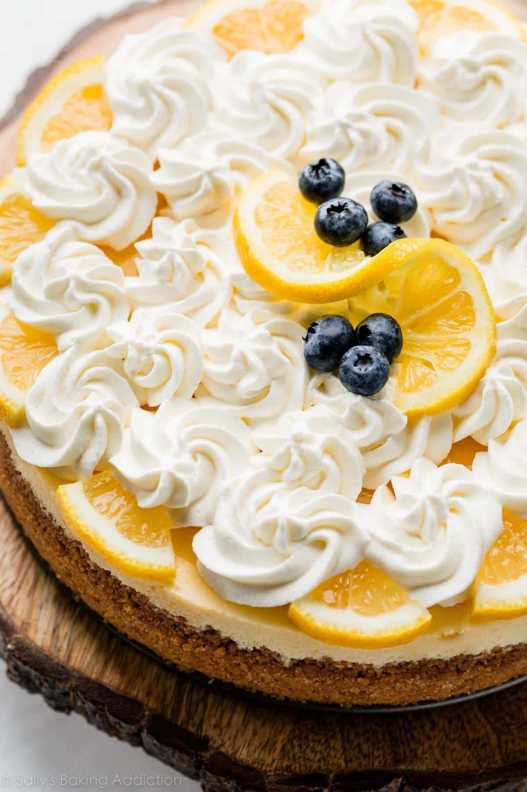

Lemon Cheseecake
Home

How to make lemon cheesecake
Need a simple, zingy dessert you can make with minimal fuss?
Try this creamy no-bake lemon cheesecake, made with just a few basic storecupboard ingredients
Ingredients
- 110g digestive biscuits
- 50g butter
- 25g light brown soft sugar
- 350g mascarpone
- 75g caster sugar
- 1 lemon (zested)
- 2-3 lemon's juice (about 90ml)
Instructions
-
Crush the digestive biscuits in a food bag with a rolling pin or in the food processor.
Melt the butter in a saucepan, take off heat and stir in the brown sugar and biscuit crumbs.
-
Line the base of a 20cm loose bottomed cake tin with baking parchment.
Press the biscuit into the bottom of the tin and chill in the fridge while making the topping.
-
Beat together the mascarpone, caster sugar, lemon zest and juice, until smooth and creamy.
-
Spread over the base and chill for a couple of hours.